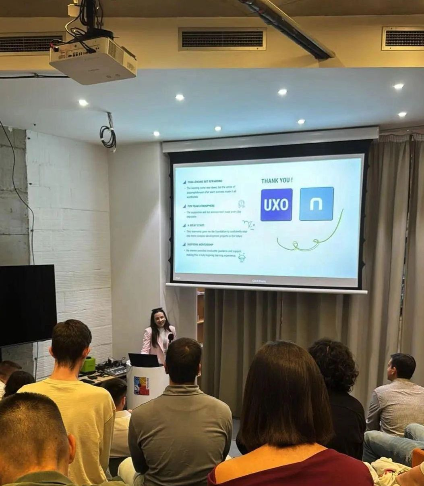
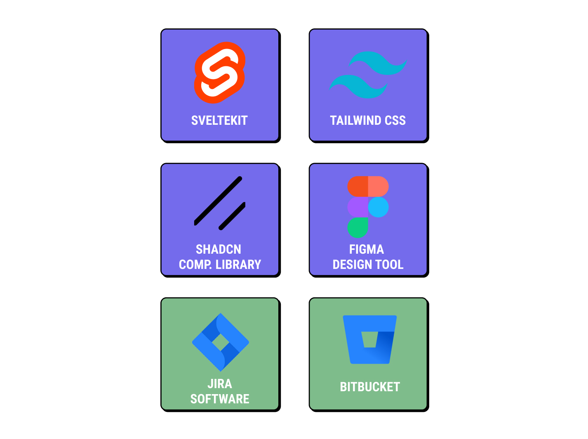
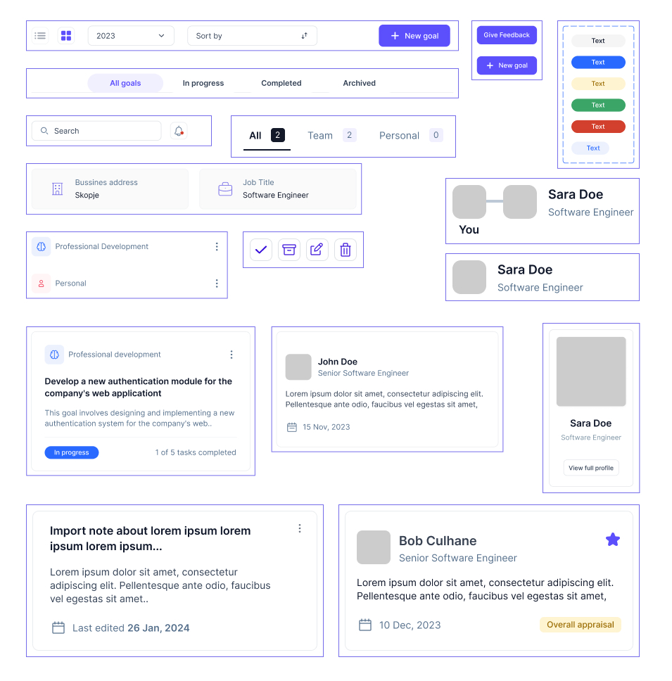
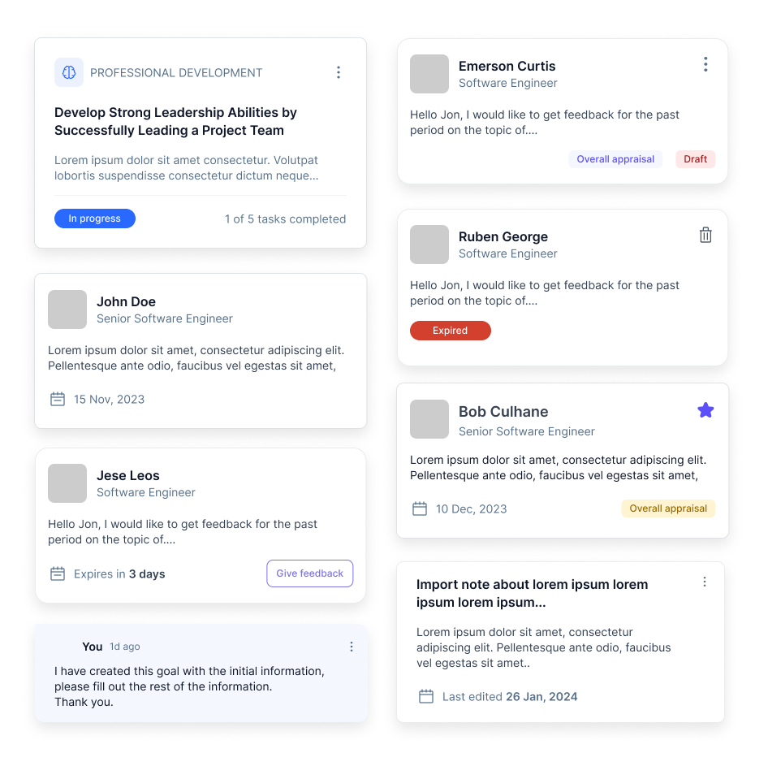

01
My Internship at Netcetera
During my internship at Netcetera, I had the chance to work with a great team and get a closer look at how real projects are built. It was a great opportunity to learn, try new things and put my knowledge into practice.
I got to work on an Employee Dashboard, where I was responsible for turning the provided designs into a working frontend. It was my first experience working on a project like this as part of a professional team, and I learned a lot along the way.

02
My Role
My main task was to build the frontend of the Employee Dashboard using SvelteKit and Tailwind CSS.
I worked with the designs provided by the design team and focused on turning them into working pages and reusable components. I also had the opportunity to work with different UI elements, understand how they fit together and make sure everything looked and worked as expected.
Throughout the internship, I worked with the team, followed the development process and used tools that helped us organize tasks and keep track of our progress.
03
Tools and Technologies
SvelteKit
I used SvelteKit to build the frontend and organize the different pages and components.
Tailwind CSS
I used Tailwind CSS to style the dashboard and keep the design consistent across the application.
ShadCN
I worked with ready made UI components that helped keep the interface consistent and accessible.
Lucide
I used Lucide icons throughout the dashboard to keep the interface clean and consistent.
Jira
We used Jira to organize tasks, follow progress and keep track of what needed to be done.
Bitbucket
We used Bitbucket to manage the code, share changes and work together with the rest of the team.

04
What is the Employee Dashboard?
The Employee Dashboard is an application that helps employees and team leaders keep track of professional goals, feedback and progress.
Everything is organized in one place, making it easier for employees to follow their development and for team leaders to keep track of their teams.

Team leaders can
- Set and manage their own professional goals.
- Follow the progress of their team members.
- View feedback about their performance.
- Suggest promotions based on employee progress and performance.
Team members can
- Set personal and professional goals.
- Receive feedback and keep personal notes.
- Stay up to date with their progress.
- Keep track of their development and communicate with their team leaders.
05
Working with Components
One of the first things I focused on was understanding the design and identifying which elements could be reused across different pages.
I went through the designs and picked out common elements such as buttons, cards, tooltips, badges and input fields. Instead of building each one separately, I worked on creating reusable components that could be used throughout the dashboard.
Once the components were ready, I started putting them together to build the different pages. This helped me keep the same design across the application and made it easier to work on each page.
The images below show some of the components I worked on and how they were used throughout the dashboard.

06
Building the Card Component
One of the more challenging parts of this project was building the card component.
The dashboard used cards to display different types of information, including goals, feedback, team members and notes. Even though they shared a similar layout, each card had its own content and small differences.
I wanted to create one component that could work for all these cases instead of building a separate card for every page.
I divided the card into three main parts:
Header
This part contains the title, labels and other information that helps identify the card. It can also include action buttons and dropdown menus.
Main Content
This is where the main information is displayed, such as goal descriptions, feedback messages or notes.
Footer
This section is used for additional details like progress bars, timestamps and action buttons.

07
Making the Card Component Flexible
After building the basic structure, I added props to control how each card looked and what it displayed.
For example, some cards needed a progress bar, while others needed status labels such as “Draft”, “Expired” or “Completed”. Using props made it possible to show or hide certain elements depending on the type of card.
This allowed me to use the same component in different parts of the dashboard without having to repeat the same code.
08
Different Types of Cards
Goals Cards
These cards display the goal title, description and current progress. I also added status labels such as “In Progress” and “Completed” to make it easier to see where each goal stands.
Feedback Cards
Feedback cards had a few different states, so I used conditional rendering in Svelte to show the right content depending on the feedback status. This helped keep the cards flexible while making each state easy to recognize.
Team Cards
These cards display information about team members, including their names, roles and feedback summaries. I focused on keeping the layout consistent and making the information easy to scan.
Notes Cards
Notes cards include a title, the note itself and the date of the last update. Since notes can have different lengths, I made sure the layout could handle different amounts of content without affecting the overall design.
09
Keeping Everything Consistent
While working on the dashboard, I paid attention to keeping the same look and feel across all pages.
I reused components wherever possible and followed the same spacing, typography and styling throughout the application. This made the interface more consistent and also helped keep the code easier to manage.
This part of the project taught me a lot about working with reusable components and showed me how much easier development becomes when everything is properly organized.
Technologies
- SvelteKit
- Tailwind CSS
- ShadCN
- Lucide
- Jira
- Bitbucket